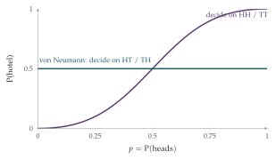

STEP I 2019, Question 11
Read the question before you go on. It is in the STEP I paper in OCR’s download of the 2019 STEP papers (a zip file): www.ocr.org.uk/Images/696590-2019-past-papers.zip
The hook
You need to make a fair decision, but the only coin available is bent, and you do not know how biased it is. Can you still make a fair choice? John von Neumann’s answer, from 1951: toss it twice. If it comes up HT, choose the hotel; if TH, the tea shop; if HH or TT, toss twice more. Since HT and TH both have probability \(pq\), the decision is perfectly fair, whatever \(p\) is.
The procedure in this question is the opposite: it decides on HH and TT, which is quick but unfair (hotel with probability \(\frac{p^2}{p^2 + q^2}\)). The question shows that it never takes long, whatever the coin. Comparing the two procedures shows a basic trade-off in generating randomness: speed against fairness.
Before you start
In one round, what is the probability of a decision? Of no decision? What is the largest value \(2pq\) can take?
A decision is made if the coins agree, with probability \(p^2 + q^2\); otherwise, with probability \(2pq\), they continue. Since \(pq = p(1 - p) \leq \frac14\) (with equality at \(p = \frac12\)), we have \(2pq \leq \frac12\).
Working it through
Stage 1 Decision on the \(n\)th round
Rounds are independent. A decision on the \(n\)th round needs \(n - 1\) rounds of disagreement followed by agreement: \[\mathrm{P}(\text{decision on round } n) = (2pq)^{n-1}(p^2 + q^2). \qed\]
Stage 2 Decision by round \(n\)
What is the probability of no decision in the first \(n\) rounds?
No decision in \(n\) rounds has probability \((2pq)^n \leq \bigl(\frac12\bigr)^n\), so a decision by round \(n\) has probability at least \(1 - \frac{1}{2^n}\), whatever \(p\).■
Stage 3 Three people
After a first round with two heads and one tail, the third person turns the tail over to a head. What must happen in round two for a decision? And after two tails and one head?
Round one decides with probability \(p^3 + q^3\). Otherwise two coins agree and one differs. If the majority showed heads (probability \(3p^2q\)), the odd coin is turned to heads, and the round-two decision needs the other two to toss heads: probability \(p^2\) (all tails is now impossible). Similarly with a tails majority (probability \(3pq^2\)), a decision needs two tails: \(q^2\). So \[\mathrm{P}(\text{decision by round } 2) = p^3 + q^3 + 3p^2q\cdot p^2 + 3pq^2\cdot q^2.\]
Write everything in terms of \(s = pq\). (Use \(p + q = 1\).)
We have \(p^3 + q^3 = (p + q)^3 - 3pq(p + q) = 1 - 3s\), and \(3p^4q + 3pq^4 = 3s(p^3 + q^3) = 3s(1 - 3s)\). So \[\mathrm{P} = 1 - 3s + 3s - 9s^2 = 1 - 9s^2 \geq 1 - \frac{9}{16} = \frac{7}{16},\] since \(s \leq \frac14\).■
Looking back
Complements. “At least once by round \(n\)” was easiest as \(1 -\) (“never in \(n\) rounds”).
Bound the worst case. The unknown \(p\) was handled by the inequality \(pq \leq \frac14\).
Symmetric functions. Expressions symmetric in \(p\) and \(q\) simplify when written in terms of \(p + q = 1\) and \(pq\).
What’s really going on
Von Neumann’s trick
The procedure in the question is quick but biased. Von Neumann’s procedure is fair: toss twice, decide on HT or TH, repeat on HH or TT. Each attempt succeeds with probability \(2pq\), so it takes on average \(\frac{1}{2pq}\) attempts, which is slow when the coin is very biased (Figure 12.9.1). The question’s procedure decides with probability \(p^2 + q^2 \geq \frac12\) per round, but its answer favours the hotel when \(p > \frac12\).

Extracting randomness
Von Neumann’s trick is the first randomness extractor: a procedure that turns imperfect randomness into perfect randomness. It wastes a lot (each pair of tosses yields at most one fair bit, and often none), and better methods recycle the discarded HH and TT pairs to extract almost all the randomness the coin contains, which is measured by its entropy \(-p\log_2p - q\log_2q\) bits per toss. Extractors are used in computers’ hardware random number generators, which harvest unpredictable but biased physical noise and must turn it into unbiased bits for cryptography.
John von Neumann described the trick in a 1951 paper, “Various techniques used in connection with random digits”, written when he and his colleagues were running some of the first computer simulations (the “Monte Carlo method”) for the design of nuclear weapons. In the same paper he made a famous remark about generating random numbers by arithmetic: “Anyone who considers arithmetical methods of producing random digits is, of course, in a state of sin.”
The thinking skill
When a parameter is unknown, look for events whose probabilities are equal whatever its value, and base decisions on those.
HT and TH have the same probability \(pq\), so comparing them removes \(p\) altogether. At university, the same idea appears in statistics as pivotal quantities and in the design of experiments, where randomisation and symmetry cancel out unknown effects.
Try this next
Expected rounds. Find the expected number of rounds for the procedure in part (i), and for von Neumann’s procedure. For which \(p\) is von Neumann’s procedure slower?
Fair three-way choice. Using a biased coin, devise a procedure that chooses one of three options, each with probability exactly \(\frac13\).
A biased die from a fair coin. Using a fair coin, devise a procedure that simulates a coin with probability of heads exactly \(\frac13\). What is the expected number of tosses?
Three people again. In part (ii), what is the probability that they go to the hotel, as a function of \(p\)? Is the procedure fair when \(p = \frac12\)?
Further reading
John von Neumann, “Various techniques used in connection with random digits”, National Bureau of Standards Applied Mathematics Series 12 (1951). Short and famous.
Donald Knuth, The Art of Computer Programming, Vol. 2 (Addison-Wesley), Chapter 3, on random numbers.
Michael Mitzenmacher & Eli Upfal, Probability and Computing (Cambridge University Press), on extracting randomness and entropy.